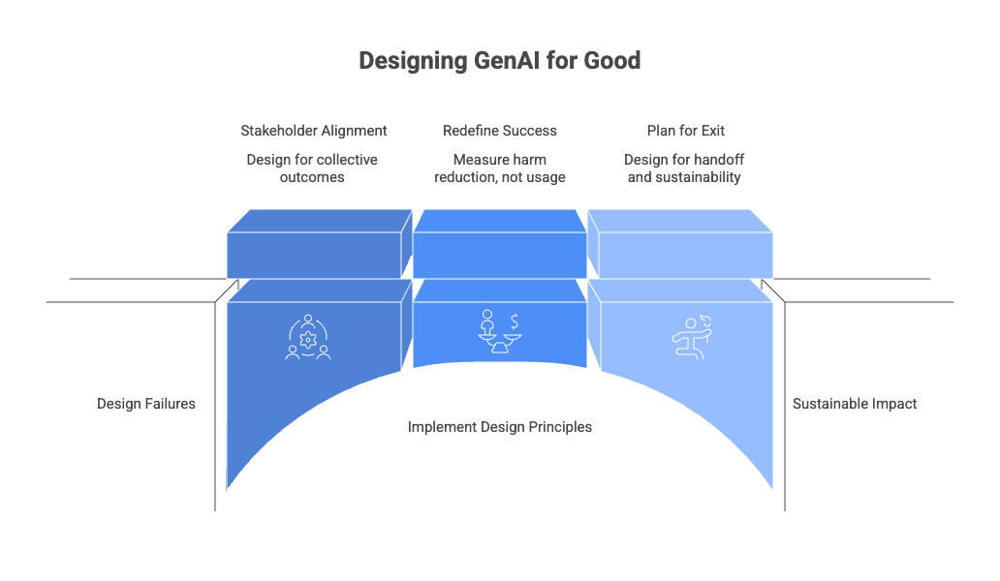
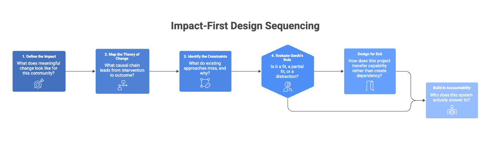

Every major tech conference now has a "GenAI for Good" track. Every foundation has a grant program for it. Every AI lab has a responsible AI division with a slide deck about it. The phrase is everywhere, and it sounds reassuring. It implies direction, ethics, and purpose.
That proliferation is the problem — not the intent behind it.
The intent is genuine. The urgency is real. But when you look closely at how most GenAI for Good projects get built, you find a consistent structural failure: they start from what the technology can do, and only then ask where it might be useful. That sequence feels practical. It is also exactly backwards.
The Label Without the Framework
"GenAI for Good" is currently doing the same work that "AI for Good" did before it, and "Tech for Good" did before that. Each wave inherits the same fundamental confusion: the belief that attaching a moral label to a technology category produces meaningful direction.
It isn't. It's a starting point at best, and a distraction at worst.
What's different about GenAI specifically is the scale of the gap between what the technology appears capable of and what it can reliably deliver in high-stakes, under-resourced, and institutionally complex settings. That gap is not just technical. It is organizational, ethical, and political.
That asymmetry matters. A hallucinating model deployed in a commercial chatbot is an embarrassment. A hallucinating model deployed in a healthcare triage tool for a community with limited access to care is a governance failure.
The label does not come with the framework. Teams have to build that framework themselves — and most aren't.
The Capability Trap
Here is how most GenAI for Good projects actually begin. A team — well-intentioned, technically capable — looks at what the current generation of models can do. They can generate text, summarize documents, translate, answer questions, classify, extract patterns, produce synthetic voices, simulate dialogue.
Then the question becomes: where can we apply this?
And that framing is the trap.
When you start from capability, capability becomes the ceiling of your ambition. You end up designing for problems that fit the technology, rather than designing for problems that matter and then asking what role, if any, this technology should play.
This is not a technical failure. It is a design failure. And it happens before the first line of code is written.
Three Design Failures
Most GenAI for Good projects share three structural design failures that distinguish them from their commercial counterparts — not in obvious ways, but in ways that quietly undermine impact from the beginning.
The stakeholder is not the user. In commercial AI, "user" and "stakeholder" are roughly equivalent. The person using the product is the person whose behavior you're optimizing around. In social impact work, the relationship is rarely that simple. The person interacting with a system may not be the person most affected by its consequences. Funders, NGOs, public institutions, frontline workers, and communities all sit in a wider stakeholder field with different incentives and different definitions of success.
Success is not engagement. Commercial AI is measured by retention, conversion, and engagement. These metrics are seductive precisely because they're legible. But for GenAI for Good, they are often irrelevant or actively misleading. A system that is used constantly may be a sign of success — or a sign that the institution it was supposed to support is failing. The right metric might be fewer interventions, shorter dependency, improved trust, or increased institutional capability without the tool.
The goal is exit, not growth. This is the sharpest difference and the one most teams resist acknowledging. Commercial AI is built to scale, to grow, to become indispensable. A well-designed GenAI for Good project should be built to become unnecessary. If the intervention works, the conditions that made it necessary should change. That requires designing for handoff — to communities, to institutions, to infrastructure that outlasts the technology. Projects that don't plan for exit don't plan for success. They plan for dependency.

Impact-First Design
The alternative is not more ethics reviews or more diverse datasets, though both matter. The alternative is a fundamentally different sequencing of design decisions.
Impact-first design begins with a theory of change, not a technology stack. Before any conversation about what GenAI can do, the team must answer a harder set of questions: What does meaningful change look like for this community? What structures currently block it? Which actors hold power over the outcome? What would accountability look like? What would success look like if the tool disappeared?
These questions are not AI questions. They are social design questions. And answering them rigorously will frequently reveal that GenAI is not the most important intervention available — or not an intervention worth building at all.
When the answer does point toward GenAI as a useful component of a larger solution, the design work changes character entirely. You are no longer asking "what can this technology do?" You are asking "what is the narrowest, safest, most accountable role this technology can play inside a broader intervention designed around impact?"
1. Define the impact — what does meaningful change look like for this community?
2. Map the theory of change — what causal chain leads from intervention to outcome?
3. Identify the constraints — what do existing approaches miss, and why?
4. Evaluate GenAI's role honestly — is it a fit, a partial fit, or a distraction?
5. Design for exit — how does this project transfer capability rather than create dependency?
6. Build in accountability to stakeholders, not users — who does this system actually answer to?

What This Looks Like in Practice
The practical difference between capability-first and impact-first design shows up in a specific set of decisions that teams make early and rarely revisit.
It shows up in who is in the room when the problem is defined. Capability-first teams define the problem among people who understand the technology. Impact-first teams define the problem among people who understand the system the technology is entering — and include those who bear the consequences if it fails.
It shows up in how success is measured. Capability-first projects track outputs: queries processed, documents summarized, hours saved. Impact-first projects track outcomes: did legal access improve, did burden on frontline staff decrease without loss of care quality, did institutional capacity increase, did dependency decrease?
It shows up in how the team talks about GenAI internally. On capability-first projects, the technology is the center of the design conversation — its limitations set the boundaries of what gets imagined. On impact-first projects, the technology is a component inside a larger strategy. If it introduces more fragility than leverage, it gets removed.
That distinction sounds obvious when stated plainly. It is not obvious in practice. The technology is expensive, impressive, and heavily invested in. The social problem is complex, ambiguous, and resistant to neat demos. So teams drift toward the thing they can show. The demo becomes the product. The product becomes the intervention. And the intervention becomes detached from impact.
The label is not the work. The framework is.
This work has been prepared in collaboration with a Generative AI language model (LLM), which contributed to drafting and refining portions of the text under the author's direct guidance, review, and editorial control.